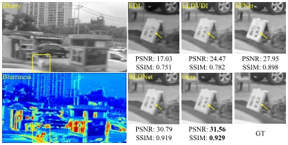

News
- 2026‑01: Passed PhD Qualifying Examination @ UM.
- 2026‑01: (First author) One paper on event-based lip reading is accepted by ACM TOMM.
- 2025‑06: (First author) One paper on cross‑view geo‑localization is accepted by ICCV 2025.
- 2024‑09: (Equal contribution) One paper on event‑assisted blurry image unfolding is accepted by IEEE TNNLS.
- 2024‑07: (Equal contribution) One paper on event‑assisted blurry image unfolding is accepted by IEEE TIP.
Research
 |
Event‑Assisted Blurriness Representation Learning for Blurry Image Unfolding
Authors: Pengyu Zhang*, Hao Ju*, Lei Yu, Weihua He, Yaoyuan Wang, Ziyang Zhang, Qi Xu, Shengming Li, Dong Wang, Huchuan Lu, Xu Jia
IEEE TIP 2024 (* denotes equal contribution)
PDF /
We propose to implicitly model blur in an image by computing blurriness representation from event streams and integrate blurriness into the unfolding network.
|
Education
- 2024‑09 – Now: Ph.D. student, Computer Science, University of Macau
- 2021‑06 – 2024‑06: M.S., Information & Communication Engineering, Dalian University of Technology
- 2017‑09 – 2021‑06: B.S., Information & Communication Engineering, Dalian University of Technology
Interests
Visitor Statistics
Template from Jon Barron's website.
|